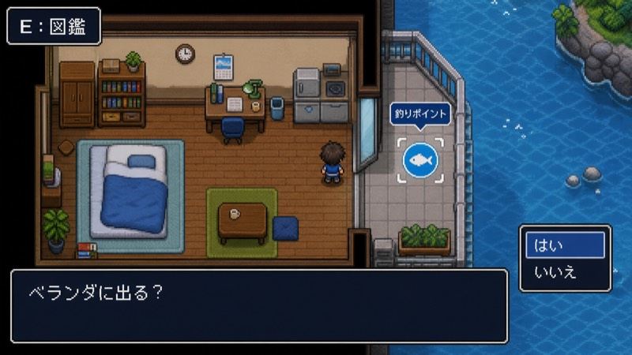
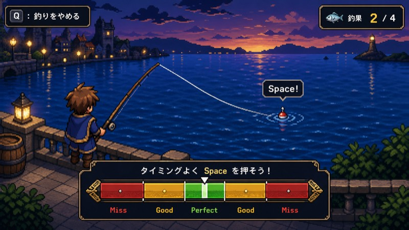

🎣 釣りゲーム実装仕様書
Webブラウザで動作する、RPGツクール風 見下ろし視点の釣りゲーム
📋概要
Webブラウザで動作する釣りゲームを実装する。ゲームはRPGツクール風の見下ろし視点で進行する。
初期実装範囲
- タイトル画面
- 部屋マップ
- ベランダマップ
- 釣りシステム
- 図鑑システム
- LocalStorageによるセーブ
将来的な拡張（マップ追加、ショップ、アイテム、餌など）を考慮し、データ駆動型の設計を行うこと。
🖥️画面仕様
内部解像度
320 × 180 ／ ブラウザ上では整数倍拡大表示を行う。
カメラ
- 固定カメラ
- スクロールなし
🖼️画面モック
初期実装の画面イメージ。マップ探索と釣りモードの見た目・UI密度の参考にする。


🎮操作
| 操作 | キー |
|---|---|
| 移動 | WASD または 矢印キー |
| 決定 | Space |
| 戻る / キャンセル | Q |
| 図鑑を開く | E |
マウス操作は実装しない。UI入力はキーボードのみ。
🏠タイトル画面
メニュー
- はじめる
- 続きから
- データ削除
操作
- 上下移動
- Space で決定
データ削除時は確認ダイアログを表示する。
🗺️マップ
部屋
ゲーム開始地点。プレイヤーは部屋内を4方向移動できる。窓を調べると以下を表示する。
💬「ベランダに出る？」 → はい / いいえ
「はい」を選択するとベランダへ移動する。
ベランダ
プレイヤーは4方向移動できる。窓を調べると以下を表示する。
💬「部屋に戻る？」 → はい / いいえ
「はい」を選択すると部屋へ移動する。
釣りスポット
ベランダ内に配置する。調べると以下を表示する。
💬「釣りを始めますか？」 → はい / いいえ
「はい」を選択すると釣りモードへ移行する。
📖図鑑
開き方
マップ画面で E キー。画面上に E: 図鑑 を表示する。
一覧表示
- グリッド形式で表示する
- 各セルには収集物を表示する
- 未発見の場合、名前は「???」
ソート
以下の3種類を実装する。
- 図鑑番号順
- 名前順
- レア度順 — レア度降順、同レア度内は図鑑番号順
操作
- WASD / 矢印キーで移動
- Space で選択
- Q で戻る
詳細画面
| 項目 | 発見済み | 未発見 |
|---|---|---|
| イラスト | 表示 | — |
| 名前 | 名前 | ??? |
| レア度 | レア度 | ? |
| 説明文 | 説明 | まだ見つかっていない |
🐟収集物データ
魚以外のアイテムも釣れるため、「魚」ではなく収集物（Catchable）として扱う。
interface Catchable {
id: string;
encyclopediaNumber: number;
name: string;
description: string;
rarity: number;
difficulty: Difficulty;
imageKey: string;
}すべてデータテーブル管理とし、収集物追加時にゲームロジックの変更が不要な設計とする。
⚙️難易度
enum Difficulty {
EASY,
NORMAL,
HARD,
LEGEND
}EASY EASY
- hookWindowMs
- 600
- requiredSuccesses
- 1
- allowGood
- true
NORMAL NORMAL
- hookWindowMs
- 500
- requiredSuccesses
- 2
- allowGood
- true
HARD HARD
- hookWindowMs
- 350
- requiredSuccesses
- 4
- allowGood
- false
LEGEND LEGEND
- hookWindowMs
- 250
- requiredSuccesses
- 8
- allowGood
- false
🎣釣りモード
終了方法
魚がヒットしていない待機状態のみ Q キーで終了可能。画面内に Q: 釣りをやめる を表示する。
浮き監視フェーズ
釣り開始後、浮きを監視する。魚が食いつく前兆として浮きが「ピクン」と動く。
- ピクン回数：0〜3回（ランダム）
ピクン
↓
待機
↓
ピクン
↓
待機
↓
沈む
⚡フッキング
浮きが沈んだ瞬間に Space を押す。成功判定時間は難易度ごとの hookWindowMs を使用する。
✅ 成功ヒットフェーズへ移行
❌ 失敗魚が逃げる → 待機状態へ戻る
🐠ヒットフェーズ
魚とのやり取りを行う。
基本操作
- Space 長押し
- 指定タイミングで Space を離す
必要成功回数：difficulty.requiredSuccesses
📊メーターゲーム
釣りシステムと完全分離すること。後から別方式へ差し替え可能な構造にする。
インターフェース
export type MeterResult =
| "perfect"
| "good"
| "miss";
export interface MeterGame {
start(): Promise<MeterResult>;
}初期実装
Space 長押しでゲージ増加。離したタイミングで Perfect / Good / Miss を判定して返す。
⚖️判定
Perfect常に成功
Good
allowGood が true の場合のみ成功扱いMiss即失敗 → 魚が逃げる
必要成功回数を満たすと釣り成功。
🎉釣果画面
初取得
収集物獲得
↓
図鑑登録
↓
図鑑詳細画面表示
↓
Space で次へ
↓
釣りを続けますか？ → はい / いいえ
既取得
収集物獲得
↓
釣りを続けますか？ → はい / いいえ
失敗
逃げられてしまった…
↓
Space
↓
釣りを続けますか？ → はい / いいえ
💾セーブ
LocalStorage使用。
保存タイミング
- 収集物獲得時
- 図鑑更新時
- 釣り終了時
- マップ移動時
セーブデータ
interface SaveData {
discoveredItems: string[];
currentMap: string;
playerX: number;
playerY: number;
}🎬シーン構成
TitleScene
↓
RoomScene
↓
BalconyScene
↓
FishingScene
↓
CatchResultScene
↓
FishingScene（続ける場合）
図鑑
RoomScene ┐
├─ EncyclopediaScene
BalconyScene ┘🧱プレースホルダー
初期実装では仮素材を使用する。後から素材を差し替えられる構造にすること。
| 対象 | 仮素材 |
|---|---|
| 主人公 | 単色矩形 |
| 浮き | 単色スプライト |
| 収集物 | 単色アイコン |
| UI | Phaser標準描画 |
📐実装方針
- TypeScriptのstrictモードを有効化
- データ駆動設計
- 収集物追加時にコード変更不要
- マップ追加を容易にする
- メーターゲーム差し替え可能
- UI入力はキーボードのみ
- 可能な限りSceneごとに責務分離を行う